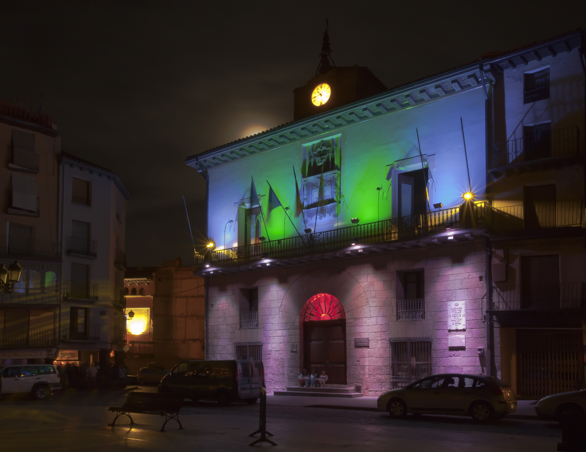

Información para todas las personas
Web pública de Calatayud
Un espacio abierto para consultar la información disponible de la sede, sin necesidad de iniciar sesión.
Acceso abierto
Esta es la zona pública de la sede digital. El acceso a esta página no requiere cuenta ni contraseña.